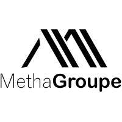

Lors de mon premier stage pour découvrir le monde de l'entreprise.
J'ai pu réaliser les missions suivantes :
- Chargé du déploiement et de la communication
- Chargé du Web Marketing
- Chargé des réseaux sociaux
- Chargé de l'entretien web
